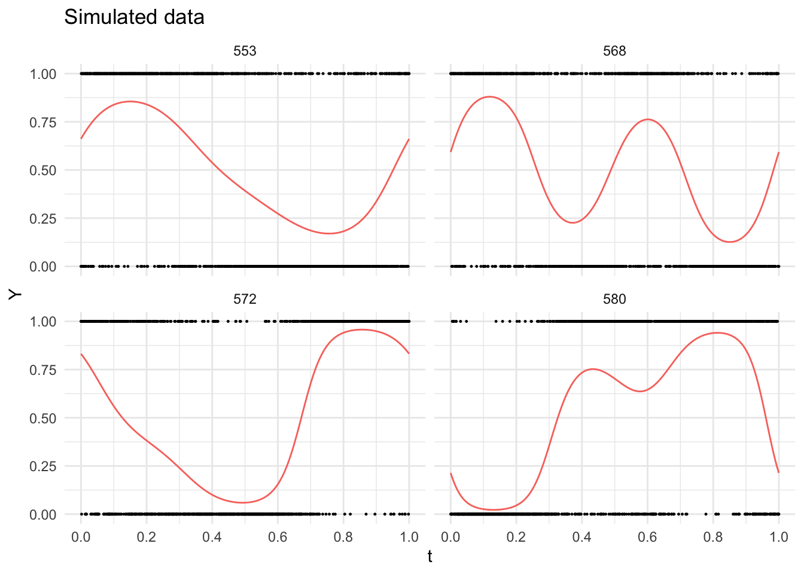
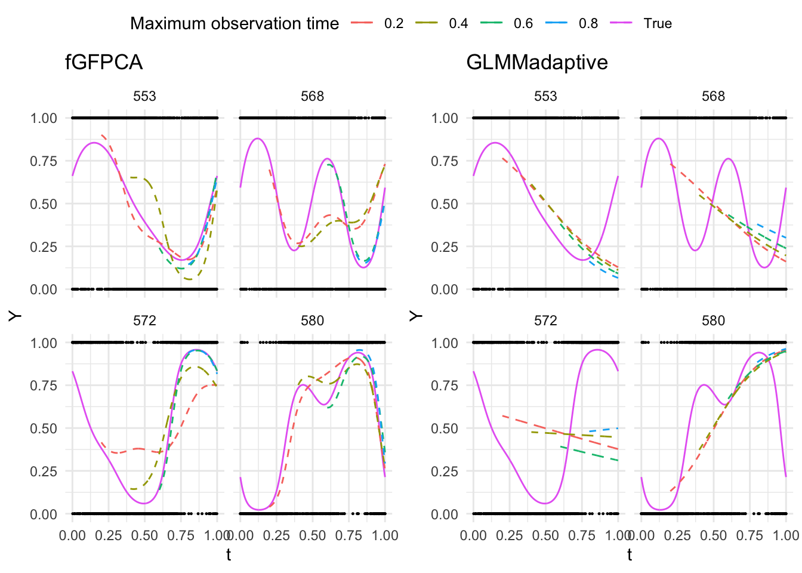
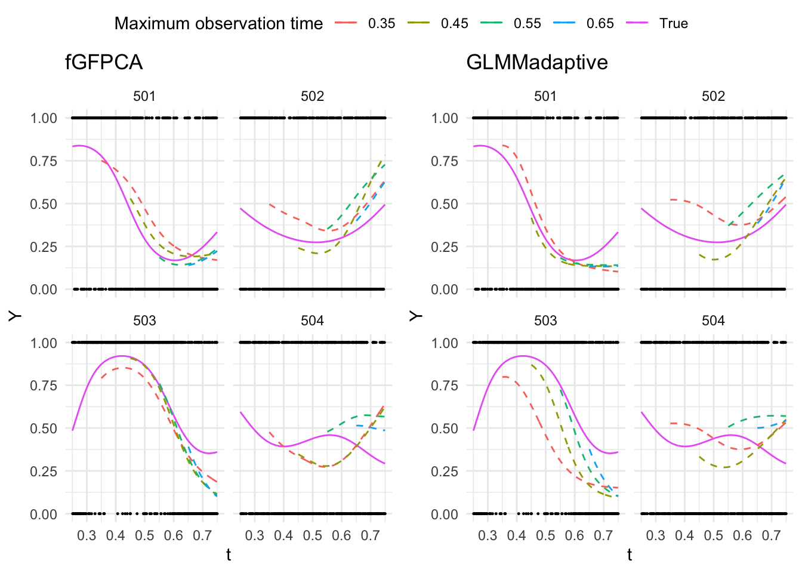

\[g[E(Y_i(t))] = \eta_i(t) = \beta_0(t)+b_i(t)\]
\[p(Y_i(t)) = h(Y_i(t))exp\{\eta_i(t)T[Y_i(t)]-A(\eta_i(t))\}\]
\[\eta_i(t) = \beta_0(t)+b_i(t)\]
In practice we would observe the discrete realization of \(\{Y_i(t), t\}\) along a dense grid. For simplicity, we assume the observation grid is regular (same across sample). When we have J observations points in \((0, T]\), then for the jth observation point, we denote the corresponding value of t as \(t_j\), and the corresponding outcome at this point \(Y_i(t_j)\).
Choose a proper bin width \(w\) considering model complexity and identifiability. For now let’s say the bins are equal-length and non-overlapping.
At the every bin, we fit a local intercept-only model:
\[g[E(Y_i(t_j))] =\eta_i(t_{m_s})= \beta_0(t_{m_s})+b_i(t_{m_s})\] where \(t_j \in (t_{m_s}-\frac{w}{2}, t_{m_s}+\frac{w}{2}]\).
Here we are basically saying that the value of latent function is constant within the same bin, which clearly is a misspecification of the true latent process.
From the model above. we will be able to estimate a \(\hat{\eta_i}(t_{m_s})\) on the binned grid for every individual in the training sample.
Here, we fit a FPCA model on the \(\hat{\eta_i}(t_{m_s})\) obtained from step 2:
\[\hat{\eta}_i(t_{m_s}) = f_0(t_{m_s})+\sum_{k=1}^K\xi_{ik}\phi_{k}(t_{m_s})+\epsilon_i(t_{m_s})\]
where \(\xi_{ik}\) independently follows normal distribution \(N(0, \lambda_k)\), and \(\epsilon_i(t_{m_s})\) at each point follows \(N(0, \sigma_2)\).
From this model, we will be able to obtain the following estimates which are shared across population:
The mean and basis functions are evaluated on the binned grid. To extend it to the original measurement grid data was collected on, we project the estimated eigenfunctions \(\hat{\mathbf{\Phi}}\) back use spline basis. Now we have extend the \(\hat{\phi}_k(t_{m_s})\) to the original grid \(\hat{\phi}_k(t_j)\)
Because of the misspecification of local GLMMs, the estimated eigenfunctions and eigenvalues are also biased by a constant multiplicative effect. Therefore, we use a GLMM to re-evaluate the mean function, eigenfunctions and eigenvalues.
Now, let’s assume we have a new subject \(u\) with \(J_u\) observations (\(J_u < J\)). Then the log-likelihood of this new subject would be:
\[l_u=\sum_{t_j<t_{J_u}}log(h(Y_u(t_j)))+\hat{\eta}_u(t_j)T(Y_u(t_j))-log(A[\hat{\eta}_u(t_j)])\]
where \(\hat{\eta}_u(t_j) = \hat{f}_0(t_j)+\sum_{k=1}^K \xi_{uk}\hat{\phi}(t_j)\).
With estimates for the population-level parameters from fGFPCA algorithms above, we can estimate \(\xi_{uk}\) by maximization of \(l_u\). Direct maximization some times does not have closed form solution. Numeric maximization methods seem not very stable as well. So I have decided to used a Bayes approach (Laplace Approximation):
Laplace Approximation would get the posterior mode of \(\xi_{uk}\) through quadratic approximation.
Here we simulate binary data from cyclic latent process:
\[\begin{aligned} Y_i(t) & \sim Bernoulli(\frac{exp(\eta_i(t))}{1+exp(\eta_i(t))}) \\ \eta_i(t) &= f_0(t)+ \xi_{i1}\sqrt{2}sin(2\pi t)+\xi_{i2}\sqrt{2}cos(2\pi t)+\xi_{i3}\sqrt{2}sin(4\pi t)+\xi_{i4}\sqrt{2}cos(4\pi t) \end{aligned}\]
where:

\[g(E(Y_i(t))) = \beta_0+\beta_1t+b_{i0}+b_{i1}t\]

| Window | 0.2 | 0.4 | 0.6 | 0.8 | 0.2 | 0.4 | 0.6 | 0.8 |
|---|---|---|---|---|---|---|---|---|
| (0.2, 0.4] | 146.407 | 387.708 | ||||||
| (0.4, 0.6] | 183.967 | 74.977 | 291.579 | 269.799 | ||||
| (0.6, 0.8] | 218.265 | 49.275 | 15.776 | 315.778 | 282.736 | 278.242 | ||
| (0.8, 1.0] | 108.918 | 77.981 | 17.747 | 12.005 | 563.011 | 477.485 | 597.746 | 600.34 |
| Window | 0.2 | 0.4 | 0.6 | 0.8 | 0.2 | 0.4 | 0.6 | 0.8 |
|---|---|---|---|---|---|---|---|---|
| (0.2, 0.4] | 0.748 | 0.591 | ||||||
| (0.4, 0.6] | 0.664 | 0.734 | 0.524 | 0.596 | ||||
| (0.6, 0.8] | 0.715 | 0.790 | 0.803 | 0.669 | 0.694 | 0.687 | ||
| (0.8, 1.0] | 0.740 | 0.755 | 0.781 | 0.784 | 0.514 | 0.556 | 0.526 | 0.564 |
| Method | Fit | Prediction |
|---|---|---|
| fGFPCA | 0.725 | 1.592 |
| GLMMadaptive | 2.287 | 0.017 |
I think we could say that while the total time spend on model fitting + prediction are similar between two methods, fGFPCA achieved much better flexibility and much better predictive performance of prediction under every scenario.
Here we would like to fit fGFPCA and GLMMadaptive on a dataset with smaller sample size and/or smaller measurement density. For the GLMMadaptive model, we would set it up with spline basis functions so that its flexibility is comparable with fGFPCA model, such as:
\[g(E(Y_i(t))) = \sum_{k=1}^5\zeta_{k}B_k(t)+\sum_{l=1}^5\xi_{il}\phi_l(t)\]
I did the following things for data-reduction
Below are some of the outcomes:

| Window | (0.25,0.35] | (0.25,0.45] | (0.25,0.55] | (0.25,0.65] | (0.25,0.35] | (0.25,0.45] | (0.25,0.55] | (0.25,0.65] |
|---|---|---|---|---|---|---|---|---|
| (0.35,0.45] | 35.724 | 48.779 | ||||||
| (0.45,0.55] | 77.379 | 22.690 | 74.537 | 34.232 | ||||
| (0.55,0.65] | 32.581 | 20.370 | 20.043 | 48.683 | 35.666 | 18.303 | ||
| (0.65, 0.75] | 158.191 | 135.968 | 130.360 | 66.648 | 174.158 | 141.285 | 143.370 | 103.92 |
| Window | (0.25,0.35] | (0.25,0.45] | (0.25,0.55] | (0.25,0.65] | (0.25,0.35] | (0.25,0.45] | (0.25,0.55] | (0.25,0.65] |
|---|---|---|---|---|---|---|---|---|
| (0.35,0.45] | 0.657 | 0.643 | ||||||
| (0.45,0.55] | 0.611 | 0.690 | 0.624 | 0.702 | ||||
| (0.55,0.65] | 0.687 | 0.710 | 0.714 | 0.666 | 0.686 | 0.702 | ||
| (0.65, 0.75] | 0.604 | 0.639 | 0.636 | 0.653 | 0.598 | 0.593 | 0.587 | 0.62 |
There is huge difference in compuation time. GLMMadaptive took 23 minutes, while fGFPCA took less than 3 seconds.